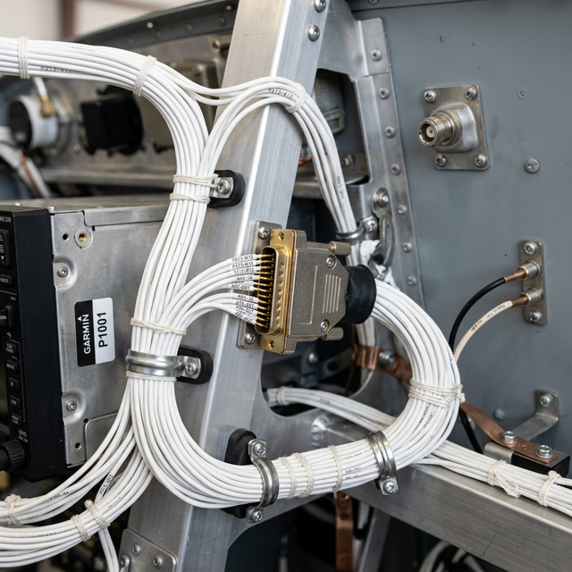

Installation standards awareness
cross-link
Module Objectives
- Identify AC 43.13-1B as the FAA's primary baseline standard for maintenance practices.
- Determine the correct hierarchy of technical data when routing or terminating aircraft wiring.
- Explain the regulatory limitation of acceptable data versus approved data.
Why Does This Matter?

You are routing a new wire harness for a transponder installation. The manufacturer's manual tells you what pins to connect, but it doesn't say how tight the bend radius of the coaxial cable should be as it leaves the tray. It doesn't specify the minimum separation distance between your new wire bundle and the aircraft's hydraulic lines. It doesn't define the crimp pull-test strength. The answers to all of these physical installation questions exist in one overarching document that governs wiring practice across the entire aviation industry. If you violate its standards, your installation is inherently unairworthy.
What You Need To Know
AC 43.13-1B — The Aviation Bible
Advisory Circular (AC) 43.13-1B is the FAA's primary document outlining "Acceptable Methods, Techniques, and Practices" for aircraft inspection and repair. For an avionics technician, Chapter 11 (Aircraft Electrical Systems) is the definitive guide to physical craftsmanship.
In a Part 145 avionics shop, AC 43.13-1B Chapter 11 governs:
- Minimum allowable wire bend radii (preventing internal conductor breaks).
- Maximum distances between wire bundle clamping/support points.
- Connector installation, pin crimping methods, and splice staggering.
- Mandatory physical separation distances from fluid, fuel, hydraulic, and oxygen lines.
- Grounding and bonding resistance limits.
- Wire identification and laser marking standards.
The Hierarchy of Technical Data
AC 43.13-1B is the baseline standard. However, it is not the ultimate authority. When the aircraft manufacturer's specific wiring data exists for a procedure, the manufacturer's data ALWAYS takes precedence. The hierarchy is:
- 1. Approved Data (STCs, ADs) — Absolute Primary Authority.
- 2. Aircraft Manufacturer's Maintenance Manual (AMM/SRM) — Secondary Authority.
- 3. AC 43.13-1B — Default Standard used only when specific manufacturer data is unavailable or silent on a generic practice.
You must always check whether manufacturer-specific data applies to your installation before defaulting to the general practices of AC 43.13-1B.
Acceptable vs. Approved Data
AC 43.13-1B provides acceptable data. This means it is recognized by the FAA as a compliant way to perform a minor repair or minor alteration. However, it is generally NOT approved data (which is required for major alterations) unless specifically referenced as such by an FAA inspector in a Field Approval.
System Visualization
graph TD
A[Physical Wiring Task Required e.g., securing a bundle] --> B{Does STC explicitly define the securing method?}
B -- Yes --> C[Follow STC Instructions Exactly APPROVED DATA]
B -- No --> D{Does Airframe Mfr Manual define the method?}
D -- Yes --> E[Follow Airframe Manual Exactly APPROVED/ACCEPTED]
D -- No --> F[Consult AC 43.13-1B Chapter 11]
F --> G[Execute securing method per AC 43.13-1B ACCEPTABLE DATA]
style C fill:#166534,stroke:#14532d,stroke-width:2px,color:#fff
style E fill:#166534,stroke:#14532d,stroke-width:2px,color:#fff
style G fill:#1e40af,stroke:#1e3a8a,stroke-width:2px,color:#fff
On The Job
When you are wiring an avionics installation and you are unsure about a routing decision, a bend radius, or a separation requirement, your answer is never "just make it look good." Your answer is "check the airframe manual, and if it's silent, check AC 43.13-1B." Excellent craftsmanship in avionics is not subjective; it is explicitly defined by Chapter 11 of that advisory circular. Form the habit of looking it up rather than guessing.
Reference Terms
AC 43.13-1B (Wiring Standard)
AC 43.13-1B Chapter 11 (or the aircraft manufacturer's wiring data when it exists) is the primary standard for avionics wiring installation in a Part 145 shop, covering acceptable methods and practices.
AC 43.13-1B
The FAA Advisory Circular establishing acceptable baseline methods, techniques, and practices for aircraft maintenance and electrical installation.
Acceptable Data
Industry-standard procedures recognized as compliant for maintenance (like AC 43.13), but insufficient on their own to approve major alterations.
Approved Data
Data explicitly approved by the FAA Administrator (such as STCs, ADs, or Type Certificate Data) required to execute major alterations.
Assessment Check
AC 43.13-1B is the universal governing standard for avionics wiring craftsmanship — use it as your definitive guide whenever manufacturer-specific data is silent. --- ---